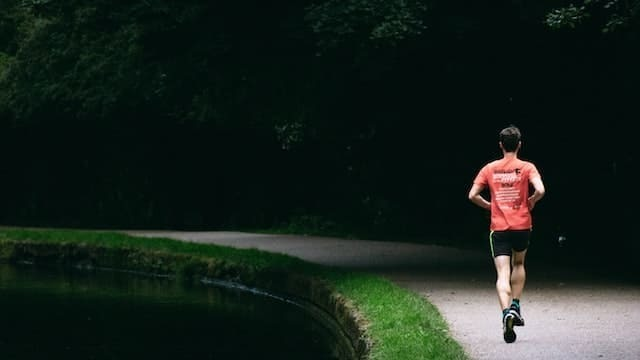
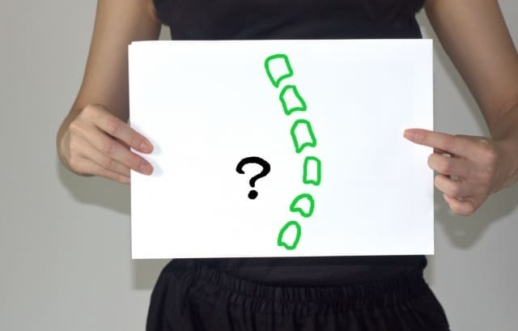

腓骨筋炎の鍼灸
脛から外くるぶし後方を通る腓骨筋に炎症が起き、外くるぶし周囲や足の外側が痛む障害です。
まず知っておきたい要点と施術方針
脛の上部から外くるぶし後方を通って土踏まずへ伸び、足裏を外へ向けアーチを支える「腓骨筋」に炎症が生じる疾患です。足首の捻挫の放置や繰り返しが最も多く、サッカー・バスケ・ランニング等の切り返し・ジャンプ動作、合わない靴、不均等な路面、急な練習量増加、扁平足、柔軟性不足、体重増加も原因となります。（公式解説）
このようなお悩みはありませんか？
- ✓外くるぶしの周囲や足の甲に刺すような痛み・腫れがある
- ✓足の外側に重心をかける時や一歩目の踏み出しで痛む
- ✓足首を内側に曲げたり伸ばしたりすると足の外側が引きつる
- ✓ランニング後1週間経っても足外側の痛みが引かない
当院の施術アプローチ
院長YouTube解説・関連動画
腓骨筋炎の症状は、足の甲やくるぶしの周りに現れる痛み

腓骨筋炎の症状は、足の甲やくるぶしの周りに現れる痛みです。くるぶしの外側に刺すような痛みがあったり腫れが見られたりすることもあります。
症状の特徴としては、体の重心を足の外側にかけた時に痛みが現れることや日常生活で歩いている時にも痛みを感じることなどがあります。
痛みは、足の屈伸などの腓骨が引き伸ばされる動きや一歩目を踏み出す時、特に現れやすいです。ランニングをしてから1週間経っても足の痛みがなかなか改善しない場合は腓骨筋炎の可能性があります。
足の外側の痛み:最も一般的な症状は、足の外側、特に腓骨筋の経路に沿った痛みです。この痛みは、足首の近くから始まり、足の裏側に沿って上昇することがあります。
痛みの増悪:活動や運動、特にランニングやジャンピングなどの繰り返し行動を伴うものを行うと、痛みが増悪することがよくあります。特に、運動の初めや終わりに痛みが強まることが一般的です。
足の外側の圧痛:腓骨筋の部位を直接圧迫すると痛みが感じられる場合があります。これは、筋肉や腱に炎症が存在することを示す可能性があります。
腫れや熱感:一部では、腓骨筋の周囲に腫れや熱感を伴う炎症の徴候が現れることがあります。
活動後のこわばり:長時間の活動や運動の後、足の外側の筋肉にこわばりや硬さを感じることがあります。
歩行時の痛み:歩く際、特に長時間の歩行や不均等な地形での歩行によって、足の外側に痛みが生じることがあります。
伸ばす動作での痛み:足を伸ばしたり、足首を内側に曲げる動作をすると、腓骨筋が伸展するため痛みが生じることがあります。
症状の変動:日によって、または活動の強度や種類によって、症状の重さや質が変わることがあります。
これらの症状は、個人の活動量や身体の状態、既存の健康問題などによって異なる場合があります。
腓骨筋炎を改善する方法は、インソールやヒールパットなどを使って調整を行うことです。痛みの原因を探しながら、調整を行って痛みを和らげるのです。
強い痛みがある場合は、包帯やテーピングなどを使って固定することもあります。
腓骨筋が硬くなっている場合は、マッサージを行うことも良いでしょう。ただし、強く押しすぎないようにすることが重要です。
休息:腓骨筋炎は多くの場合、過度な活動やトレーニングが原因となっています。痛みや炎症を和らげるためには、炎症の部位を休ませることが重要です。ストレスをかけないよう、活動を一時的に減少させるか、中断することを考えてみてください。
冷却:アイスパックや冷たいコンプレスを痛みのある部位に適用することで、炎症や腫れを軽減することができます。改善の初期段階では、特に有効です。
圧迫:圧迫バンドや弾性サポートを使用して、腓骨筋の周囲をしっかりと固定することで、腫れを軽減し、筋肉をサポートすることができます。
挙上:足を挙上して休むことで、腫れや炎症を軽減するのに役立ちます。
ストレッチング:腓骨筋や関連する筋肉を柔軟に保つことは、症状を和らげるのに役立ちます。しかし、痛みを感じる動きは避け、ゆっくりと穏やかにストレッチを行ってください。
物理的な方法:筋肉の強度や柔軟性を改善するための特定のエクササイズやテクニックを学ぶことで、腓骨筋炎の改善や再発の予防に役立つことがあります。
整形外科靴:正しいサポートやクッションを提供する靴を選ぶことは、腓骨筋へのストレスを減少させ、症状の和らぎやすさを助けることができます。
薬:疼痛や炎症を和らげるための非ステロイド性抗炎症薬(NSAIDs)を短期間使用することが、一部では有効です。
外部サポート:足首サポートやテーピング技術を使用して、足首や足の外側の筋肉に追加のサポートを提供することで、活動中の痛みを軽減することができます。
マッサージ:専門家による筋肉のマッサージは、筋肉の緊張を緩和し、血流を促進するのに役立ちます。
ショックウェーブ法や超音波:これらの方法は、痛みを軽減し、炎症の改善を促進することが報告されています。
手術:保守的な改善法が効果的でない場合、手術が推奨されることがあります。しかし、これは最後の選択肢として考慮されるものです。
腓骨筋炎は、適切な方法で改善を受けることで効果的に改善することが多いです。重要なのは、早期に症状を確認し、適切な対応をとることです。
腓骨筋炎の際に適切な靴を選ぶことは、症状の軽減や回復を促進する上で非常に重要です。以下は、腓骨筋炎の改善のために選ぶべき靴の特徴や考慮点です。
適切なアーチサポート: 足のアーチ（土踏まずの部分）に適切なサポートが提供される靴を選ぶことで、腓骨筋への過度なストレスを減少させることができます。これは、フラットフィートや高足裏の人に特に重要です。
クッション性: 適切なクッション性を持つ靴は、歩行やランニング時の衝撃を吸収し、腓骨筋へのストレスを減少させます。
広いつま先ボックス: 足の指が自然に動き、拡がるスペースが必要です。狭いつま先ボックスは足を圧迫し、不適切な動きや筋肉の緊張を引き起こす可能性があります。
適切なヒールカウンター: 靴の後ろ部分、特に踵の周りの部分がしっかりとフィットしていることが重要です。これにより、足首の安定性が向上し、適切な歩行動作をサポートします。
柔軟性: 靴の前部は、特に足の指の部分で、適度な柔軟性を持っていることが望ましい。ただし、過度な柔軟性はサポートが不足する可能性があるので注意が必要です。
耐久性: 耐久性が高く、長持ちする靴は、一貫したサポートとクッションを提供し続けることができます。
適切なフィット: すべての足は異なるので、靴を試し履きして、足にフィットするものを選ぶことが必要です。適切なサイズや形状の靴を選ぶことで、足への過度な圧迫や摩擦を避けることができます。
専門家のアドバイス: 理学療法士や整形外科医、専門の靴店のスタッフなど、専門家の意見やアドバイスを求めることで、自分の足に合った最適な靴を見つけることができます。
最後に、運動やランニングを頻繁に行う場合、特定のスポーツや活動のために設計された靴を選ぶことを考慮してください。例えば、ランニングシューズは、ランニングの際の特定の動作や衝撃を考慮して設計されています。適切な靴を選ぶことで、腓骨筋炎のリスクを軽減し、快適な活動をサポートすることができます。
腓骨筋のストレッチ方法には、椅子に座って足を引き寄せ反対の膝ももに乗せ、両手で足の甲と足裏をつかんで足首を回す方法があります。
足の甲から脛の横部分が伸びている感覚を感じてストレッチを行いましょう。左右の足を20秒ずつ行うことがおすすめです。
立った状態で足をクロスして足の甲を床に当て、クロスした足の甲へゆっくりと体重を乗せていくことで、腓骨筋を伸ばす方法もあります。急に体重を乗せ過ぎないように気をつけて左右の足を20秒ずつ行いましょう。
ツボの位置と押し方
承筋は、ふくらはぎの中央の最も盛り上がっている場所にあるツボです。
押すときは、両手でふくらはぎを包み込むようにして持ち、左右の親指を重ねて約3～5秒かけて押していきます。繰り返し5～10回行うことがおすすめです。
承山は、つま先立ちした時にふくらはぎの中央のアキレス腱と筋肉の境目にできるくぼんでいる場所にあります。
押すときは、足を曲げて左右の親指を重ねて押します。ツボに対して指が垂直になるように押しましょう。承山は強い力で押すと、痛いため強く押しすぎないように注意しましょう。
陰陵泉は、足の内側の膝の大きな骨の真下のくぼんでいる場所にあります。探すときは、内くるぶしから骨を触って真上に向かって進んで行きましょう。そのとき指が止まる場所にツボがあります。
押すときは、親指の腹を使って押します。約3～5秒かけてゆっくりと押しましょう。

筋肉、骨のお悩みのツボ図解とセルフケア
実際の施術ではお一人おひとりの体質・症状に合わせて選穴しますが、筋骨格系疼痛（腰痛・関節痛・頸肩痛・坐骨神経痛）の臨床でよく用いられる代表的なツボの目安です。

📌 代表的なツボの詳細一覧表を開く（6穴） ▼
| ツボ名 | 位置の目安 | 主な狙い | セルフケアの注意点 |
|---|---|---|---|
| 腎兪（じんゆ） | へその高さの背骨（第2腰椎下）から指2本外側 | 慢性腰痛・腰背部の疲労緩和 | 強圧を避け温灸やカイロでの温熱ケアが安全 |
| 委中（いちゅう） | 膝裏の横ジワの中央 | 腰痛・坐骨神経痛・下肢後面の張り緩和 | 血管・神経が浅いため優しく押圧 |
| 環跳（かんちょう） | お尻の横のくぼみ（大転子と仙骨下端の間） | 坐骨神経痛・殿部〜大腿外側の放散痛ケア | テニスボール等の強押しは神経悪化に注意 |
| 陽陵泉（ようりょうせん） | 膝外側下方、腓骨頭の前下のくぼみ | 膝痛・こむら返り・全身の筋緊張緩和 | 総腓骨神経近接のためしびれが出る強押し禁止 |
| 風池（ふうち） | 後頭部の生え際、首の太い筋の外側のくぼみ | 頸肩痛・首こり・緊張型頭痛の緩和 | 頭を反らしすぎず心地よい強さでゆっくり |
| 肩井（けんせい） | 首の付け根（第7頸椎）と肩先を結ぶ中央 | 肩こり・頸肩部の重だるさ軽減 | 妊娠中は強い刺激を避ける。揉み返しに注意 |
国際査読論文の科学的エビデンス
国際的な医学データベース（PubMed・Cochrane等）で報告されている筋骨格系疼痛（腰痛・関節痛・頸肩痛・坐骨神経痛）領域の代表的な査読済み鍼灸研究をまとめています（標準治療との併用や研究上の限界を含めて正確に掲載）。
📚 査読論文データ・PubMed出典リンクを開く（4件） ▼
| 年・研究デザイン | 対象・規模 | 主な結果 | 限界・出典 |
|---|---|---|---|
| 2018年 IPDメタ解析 | 慢性筋骨格痛・頭痛 39 RCTs（n=20,827） | 全領域でシャム鍼・無治療比とも有意優位（P<0.001）、1年後も効果低下約15%で持続。 | 対照設定により効果量変動。 J Pain (PMID: 29198932) |
| 2020年 Cochraneレビュー | 慢性非特異的腰痛 33 RCTs（n=8,270） | 無治療比で直後疼痛（MD -20.32）と機能（SMD -0.53）が臨床的に有意改善。有害事象は軽微。 | 施術者盲検化不可・確実性は中等度〜非常に低。 Cochrane (PMID: 33306198) |
| 2024年 多施設RCT | 慢性坐骨神経痛 216名（6病院・52週追跡） | 4週時点の下肢痛VAS減少30.8mm vs 14.9mm（差-16.0mm, P<0.001）、52週後も持続。 | 中国3次病院限定・施術者盲検化不可。 JAMA Intern Med (PMID: 39401008) |
| 2016年 メタ解析 | 変形性膝関節症 10 RCTs | 短期（13週）で疼痛（WMD -1.24, p<0.001）と機能（p<0.001）が有意改善、26週も機能維持（p=0.016）。 | 試験間の異質性が高く運動療法併用が推奨。 JBJS Am (PMID: 27655986) |
参考文献・出典
- 銀座そうぜん鍼灸院「腓骨筋炎の公式解説ページ」
- 2018年 IPDメタ解析（慢性筋骨格痛・頭痛 39 RCTs（n=20,827））— J Pain (PMID: 29198932)
- 2020年 Cochraneレビュー（慢性非特異的腰痛 33 RCTs（n=8,270））— Cochrane (PMID: 33306198)
- 2024年 多施設RCT（慢性坐骨神経痛 216名（6病院・52週追跡））— JAMA Intern Med (PMID: 39401008)
- 2016年 メタ解析（変形性膝関節症 10 RCTs）— JBJS Am (PMID: 27655986)
よくある質問（FAQ）
Q. 腓骨筋炎のときはどのような靴を選べばよいですか？▼
Q. 硬くなった腓骨筋は強くほぐしたほうがよいですか？▼
あわせて読まれる関連疾患（筋肉、骨のお悩み）
お尻から足後ろ側へ広がる痛みやしびれ。原因を見極め、腰・臀部・股関節の深層筋へ的確にアプローチします。
40〜60代に多い肩の激痛・可動域制限（五十肩）を、炎症期と拘縮期の見極めと鍼灸・全身バランス調整で改善する解説。
HTLV-1ウイルス感染者の一部に発症し、脊髄の炎症により両下肢のつっぱり・歩行障害や排尿障害が徐々に進む疾患です。
成長期の中高生がスポーツ中の急激な筋収縮により、骨盤の骨端線付着部で骨の一部が剥がれて起こる骨折です。
免疫系が自身の筋組織を攻撃して炎症と変性を起こし、対称性の筋力低下や筋痛をきたす全身性のリウマチ性疾患群です。
骨端軟骨とその周囲の軟部組織にX線上の点状石灰化像がみられ、低身長や関節・脊柱の異常を伴う遺伝性疾患群の総称です。
おひとりで悩まず、まずはご相談ください
銀座本院・川口・大宮・横浜・博多・田無の各院でご予約を承っております。